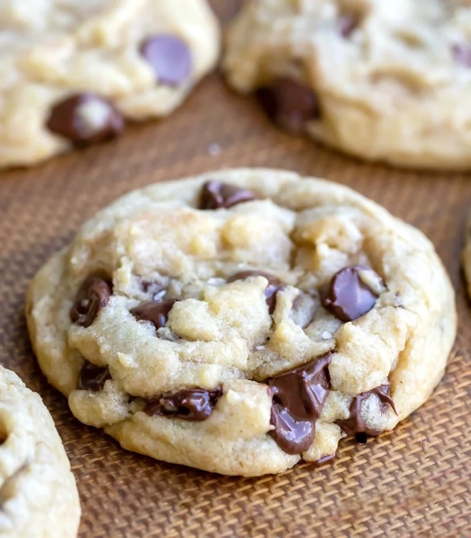

Chocolate Chip Cookies
This chocolate chip cookie recipe is a simple chocolate chip cookie recipe that makes super soft chocolate, super yummy chip cookies - no mixer necessary, no chilling needed.
Ingredients
- 1/2 cup butter
- 1/2 cup granulted sugar
- 1/4 cup brown sugar packed
- 2 teaspoons vanilla extract
- 1 large egg
- 1 3/4 cups all-purpose flour
- 1/2 teaspoon baking soda
- 1/2 teaspoon kosher salt
- 1 cup semisweet chocolate chips
Preparation
- Preheat the oven to 350 F.
- Microwave the butter for about 40 seconds. Butter should be completely melted but shouldn't be hot.
- In a large bowl, mix butter with the sugars until well-combined.
- Stir in vanilla and egg until incoroporated.
- Add the flour, baking soda, and salt. Please read the recipe note about properly measuring flour.
- Mix dough until just combined. Dough should be soft and a little sticky but not overly sticky.
- Stir in chocolate chips.
- Scoop out 1.5 tablespoons of dough (medium cookie scoop) and place 2 inches apart on baking sheet.
- Bake for 7-10 minutes, or until cookies are set. They will be puffy and still look a little underbaked in the middle.